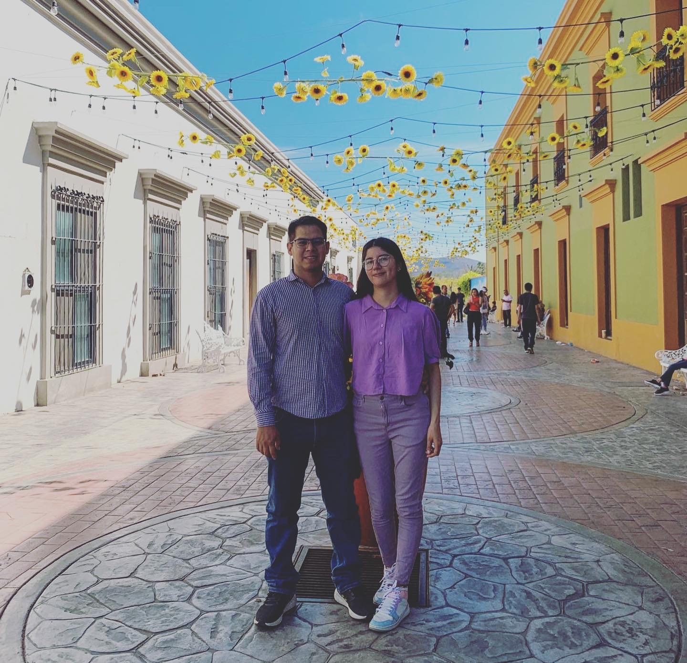

<<<<<<< HEAD
=======
>>>>>>> origin2/main
<<<<<<< HEAD
Acerca de mí
=======
>>>>>>> origin2/main
María Frausto

Biografía
Nací el 21 de junio de 1996 en Culiacán, Sinaloa. Tengo 27 años y soy licenciada en enseñanza del idioma
inglés, estudiante de ingeniería de software y próxima desarrolladora Java full-stack. Desde siempre me ha
gustado aprender muchas cosas, en especial de la tecnología. Desde que tengo uso de razón he tenido en mis
manos un aparato al que moverle y experimentar con el todo lo que pudiera hacer.
<<<<<<< HEAD
A continuación en listo algunas otras cosas sobre mí.
En informática, la World Wide Web (WWW) o red informática mundial comúnmente conocida como la web, es un sistema de distribución de documentos de hipertexto o hipermedios interconectados y accesibles vía Internet. Con un navegador web, un usuario visualiza sitios web compuestos de páginas web que pueden contener texto, imágenes, vídeos u otros contenidos multimedia, y navega a través de esas páginas usando hiperenlaces.
Historia
La web se desarrolló entre marzo de 1989 y diciembre de 1990 por el inglés Tim Berners-Lee con la ayuda del belga Robert Cailliau mientras trabajaban en el CERN en Ginebra, Suiza, y publicado en 1992.